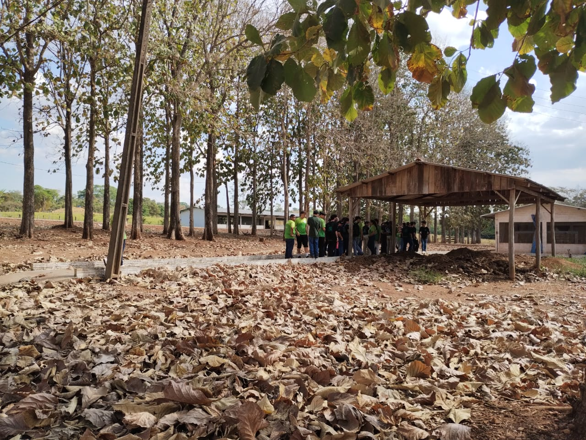
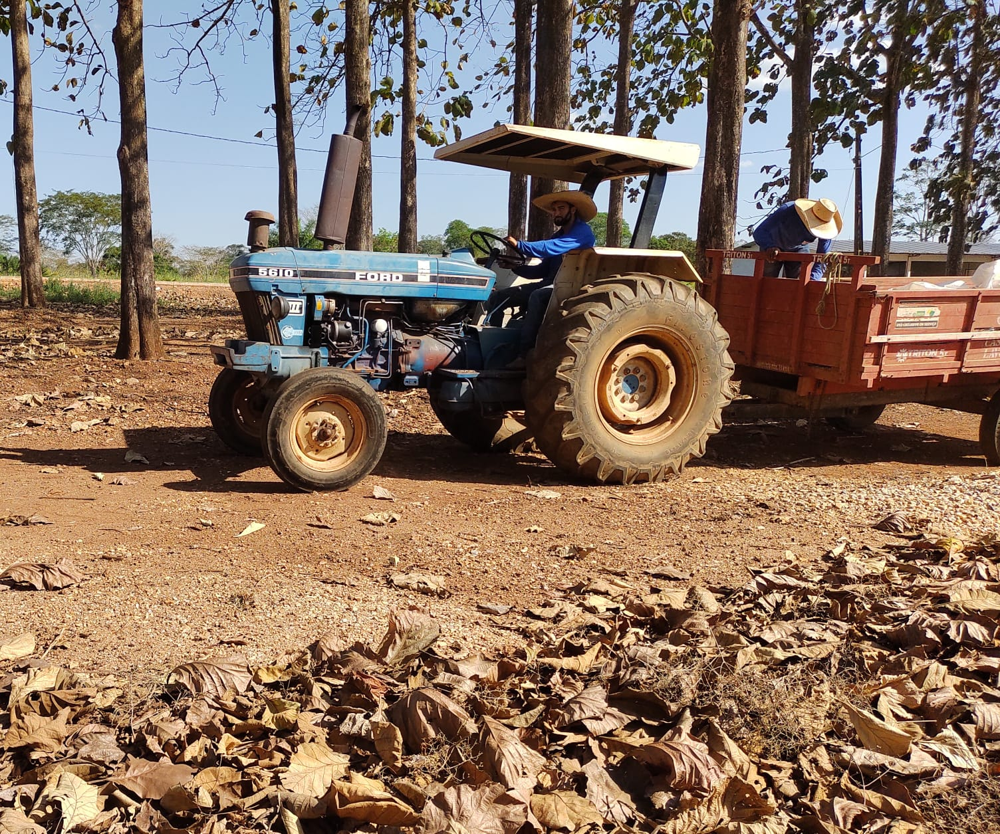
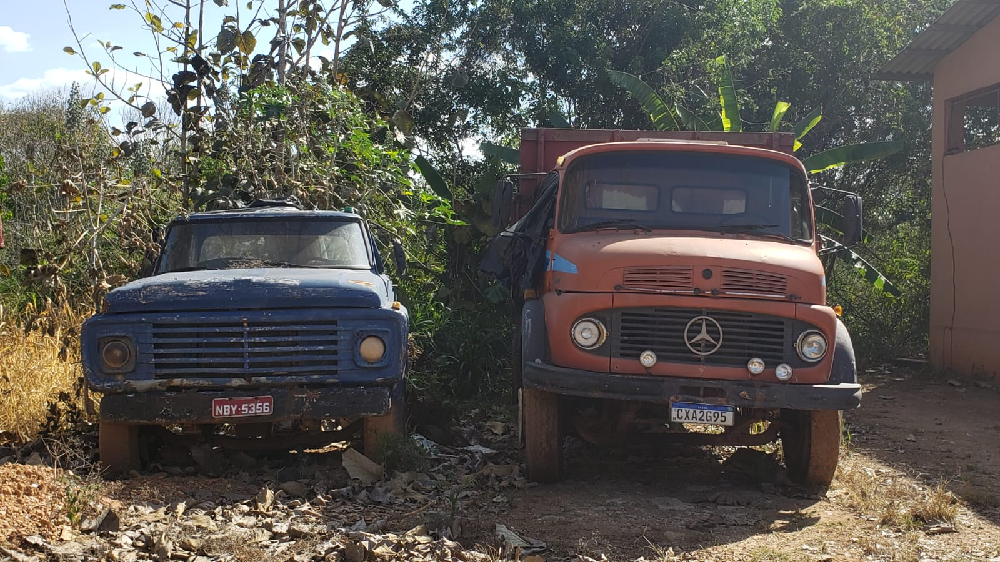
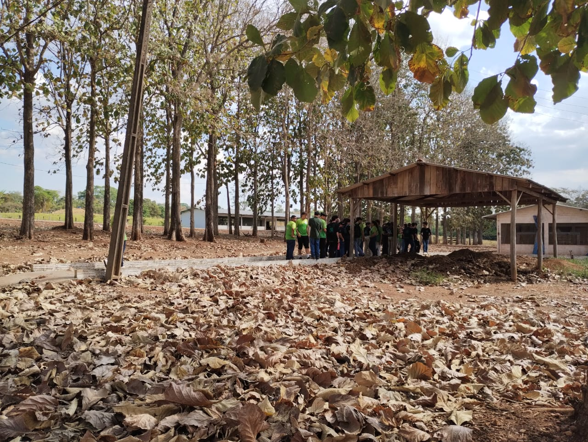
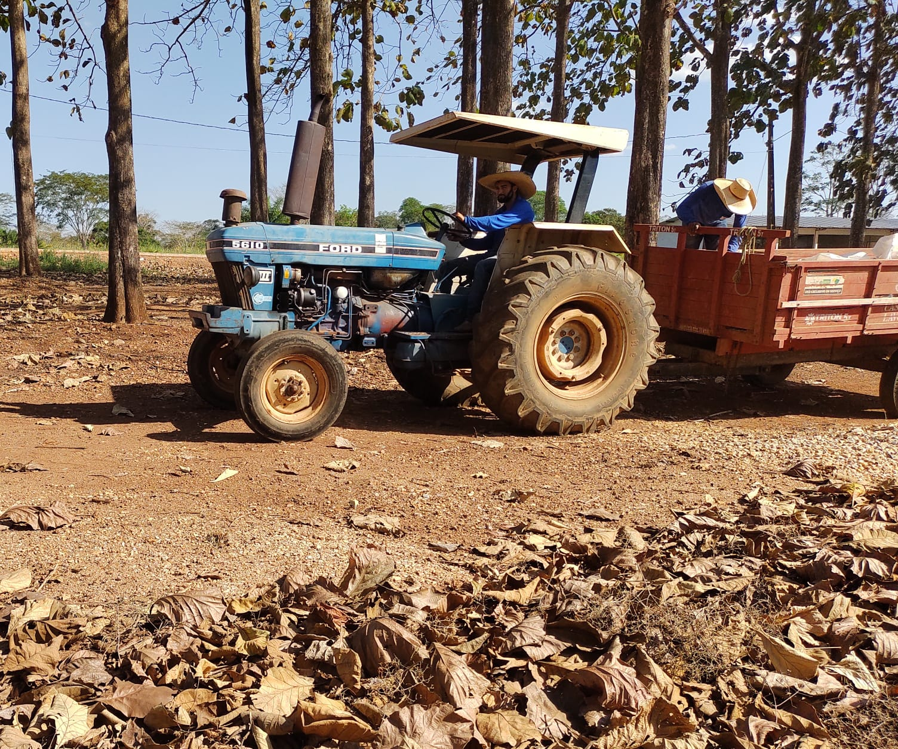
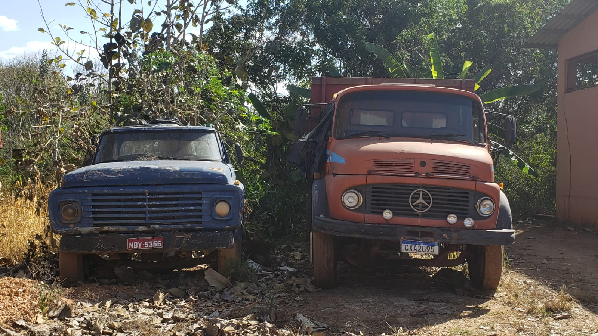
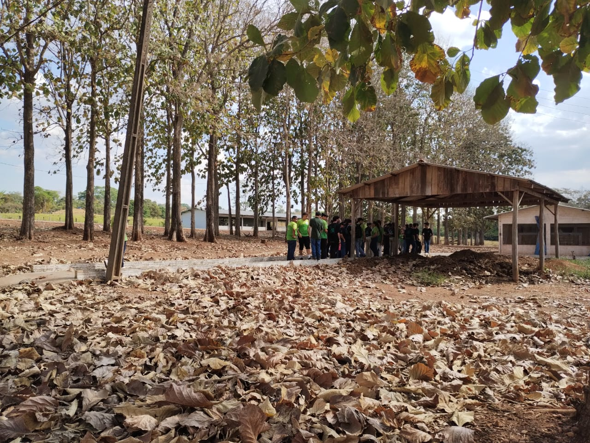
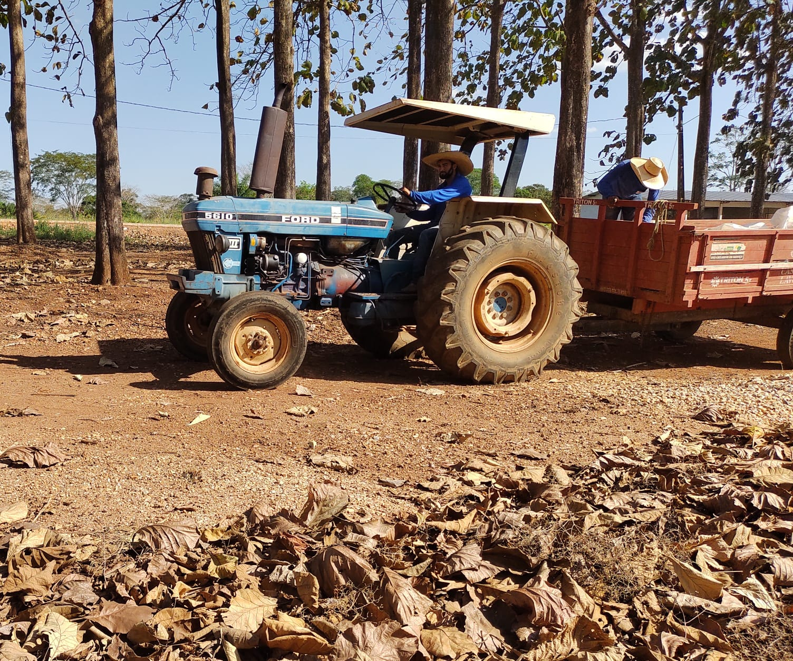
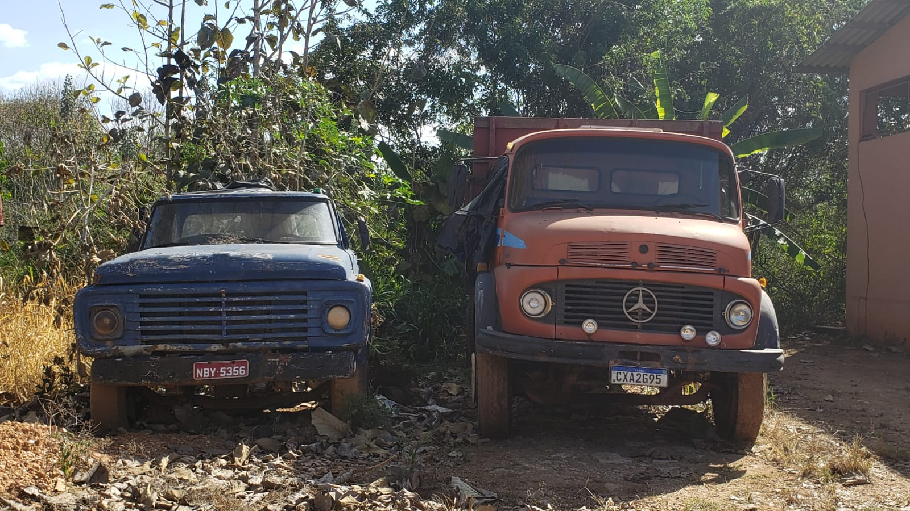

Campus Colorado do Oeste
No dia 9 de agosto, os estudantes matriculados no curso de Ciência da Computação do IFRO Campus Vilhena tiveram a oportunidade de visitar o IFRO Campus Colorado do Oeste. O objetivo desta visita foi fomentar a interação entre os estudantes de Ciência da Computação e um ambiente voltado para a agricultura, explorando a aplicação da tecnologia nesse contexto. Ao chegarmos ao campus, fomos calorosamente recebidos e apresentados às atividades planejadas para o dia.
Entre os principais destaques da visita estava a nossa participação em um workshop de fotografia e a nossa introdução ao projeto Câmera Escura, ambos com o objetivo de conectar a tecnologia com o tema central da agricultura. No workshop de fotografia, não apenas aprendemos sobre os aspectos técnicos da fotografia, mas também exploramos como a tecnologia digital transformou essa forma de arte. Aprofundamos o potencial da fotografia como meio de expressão e comunicação, ao mesmo tempo em que examinamos a evolução do conceito de uma fotografia ao longo do tempo, desde as tradicionais câmeras de filme até as mais recentes câmeras digitais e softwares de edição.
Nossas discussões chamaram a atenção para os desafios associados à busca de conteúdo de alta qualidade online, especialmente em termos de consumo de conteúdo na era digital. Discutimos a importância do pensamento crítico ao navegar pelo vasto oceano de informações na internet, enfatizando a necessidade de verificar fontes e avaliar a confiabilidade do conteúdo que encontramos. Em resposta a essa questão, aprendemos sobre a criação de um canal de vídeo dedicado a fornecer conteúdo valioso para a comunidade, abrangendo diversos tópicos para auxiliar os membros da comunidade a compreenderem assuntos específicos. O papel da tecnologia na criação e disseminação de conteúdo ficou evidente enquanto exploramos diferentes formatos multimídia, incluindo vídeos e podcasts, que permitem uma partilha de conhecimento mais envolvente e acessível.
Além dessas experiências, tivemos a oportunidade de ver sobre os setores de criação animal e produção agrícola no campus. Essa imersão nos permitiu compreender a intrincada relação entre a tecnologia e a agricultura. Em resumo, nossa visita ao IFRO Campus Colorado do Oeste foi esclarecedora e nos proporcionou uma visão clara de como a tecnologia pode ser integrada de forma eficaz em diversos ambientes. As atividades e discussões aprofundaram nossa compreensão do potencial que a tecnologia possui e como ela pode ser utilizada para promover a disseminação do conhecimento, aprimorar o bem-estar da comunidade e abordar questões globais prementes, como a segurança alimentar. Nossa experiência destacou a importância de preparar futuros cientistas da computação para aproveitar o poder da tecnologia para o bem maior da sociedade.


